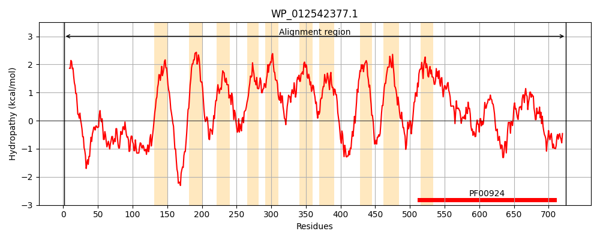
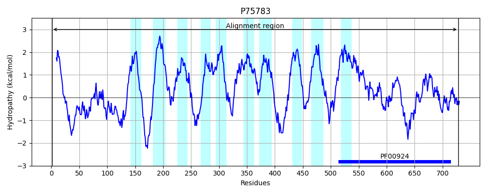
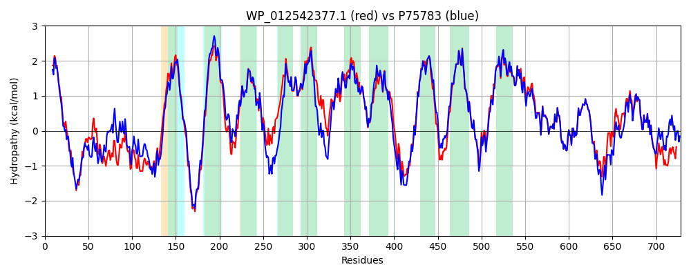

Hit Accession: P75783
Hit TCID: 1.A.23.3.2
Hit Description: gnl|BL_ORD_ID|11407 gnl|TC-DB|P75783|1.A.23.3.2 Uncharacterized mscS family protein ybiO OS=Escherichia coli (strain K12) GN=ybiO PE=3 SV=2
Mach Len: 728
e:0.000000
Query TMS Count : 10
Hit TMS Count: 10
TMS-Overlap Score: 8.300000
Predicted Substrates:CHEBI:3616;chloride, CHEBI:9175;sodium(1+), CHEBI:25367;molecule
BLAST Alignment:
Score: 2990 , Bit scores: 1156 bits, E-value: 0.0e+00, Alignment length: 728, Percentage identity: 80
Query: 1 MPWILLLLAALFTAPLSAAALPGVPTANA-DKTS--ASEPDAEQKRAAYAALADVLANDSARQELIDQLRKAAATPPPDSTPTLTPPAVKEETTVLENVTQISREYGEQLSSRFSQLWRNITGSPHKPFNSQTFTSAAWHFLLLAGLVFAFWWLVRLAALPLYRKMGEWGRHKNRDRGNWLQLPLTIAGAFVIDLLLLALTLFVGQLLSDRLNGNNPTIAFQQSLFLNAFALIEFFKAILRLIFCPRIPALRPFNLSDEAASYWSLRLSALSSLIGYGLIVAVPIISNQVNVQVGALANVVIMLCITLWALYLIFHNKTLITQGLIHLADRSLSFFSLFIRAFALVWHWLACAYFVVLFFFSLFDPGNSLKFMMGATLRSLAIIGGAALVSGILSRWIAKTITLSPATQRNYPELQKRLNGWISASLKAARILTVCVAVMLLLSAWGLFDFREWLHNDAGQKTVDVLIRIALILFFSAIGWTVLASLIENRLASDIHGRPLPSARARTLLTLFRNALAVVISTITVMILLSEIGVNIAPLLAGAGALGLAISFGAQTLVKDIITGIFIQFENGMNTGDLVTIGPLTGTVERMSIRSVGVRQDTGAYHIIPWSSITTFANFVRGIGSVVANYDVDRHEDLDKASQALKAAVDDLLAQEEIRGLIIGEPSFAGLVGLSNTAFTLRVSFTTLPLKQWTVRFALDTQVKKHFDRAGVRAPVQTWQQLPMPGS 725
M WIL +L L AP A ++PGV T D T+ A EPD EQK+AAY ALADVL ND++R+ELIDQLR AATPP + P + PP + EE TVL+ VT++SR YGE LS+RF QL+RNITGSPHKPFN QTF++A HF +LA LVF F+WL+RL ALPLYRKMG+W R KNR+R NWLQLP I GAF+IDLLLLALTLFVGQ+LSD LN + TIAFQQSLFLNAFALIEFFKA+LRLIFCP + LRPF + DE+A YWS RLS LSSLIGYGLIVAVPIISNQVNVQ+GALANV+IMLC+T+WALYLIF NK ITQ L++ A+ SL+FFSLFIRAFALVWHWLA AYF+VLFFFSLFDPGNSLKFMMGAT+RSLAIIG AA VSG+ SRW+AKTITLSP TQRNYPELQKRLNGW+SA+LK ARILTVCVAVMLLLSAWGLFDF WL N AGQKTVD+LIRIALILFFSA+GWTVLASLIENRLASDIHGRPLPSAR RTLLTLFRNALAV+ISTIT+MI+LSEIGVNIAPLLAGAGALGLAISFG+QTLVKDIITG+FIQFENGMNTGDLVTIGPLTGTVERMSIRSVGVRQDTGAYHIIPWSSITTFANFVRGIGSVVANYDVDRHED DKA+QALK AV +L+ EEIRGLIIGEP+FAG+VGLSNTAFTLRVSFTTLPLKQWTVRFALD+QVKKHFD AGVRAPVQT+Q LP PG+
Sbjct: 1 MRWILFILFCLLGAPAHAVSIPGVTTTTTTDSTTEPAPEPDIEQKKAAYGALADVLDNDTSRKELIDQLRTVAATPPAEPVPKIVPPTLVEEQTVLQKVTEVSRHYGEALSARFGQLYRNITGSPHKPFNPQTFSNALTHFSMLAVLVFGFYWLIRLCALPLYRKMGQWARQKNRERSNWLQLPAMIIGAFIIDLLLLALTLFVGQVLSDNLNAGSRTIAFQQSLFLNAFALIEFFKAVLRLIFCPNVAELRPFTIQDESARYWSRRLSWLSSLIGYGLIVAVPIISNQVNVQIGALANVIIMLCMTVWALYLIFRNKKEITQHLLNFAEHSLAFFSLFIRAFALVWHWLASAYFIVLFFFSLFDPGNSLKFMMGATVRSLAIIGIAAFVSGMFSRWLAKTITLSPHTQRNYPELQKRLNGWLSAALKTARILTVCVAVMLLLSAWGLFDFWNWLQNGAGQKTVDILIRIALILFFSAVGWTVLASLIENRLASDIHGRPLPSARTRTLLTLFRNALAVIISTITIMIVLSEIGVNIAPLLAGAGALGLAISFGSQTLVKDIITGVFIQFENGMNTGDLVTIGPLTGTVERMSIRSVGVRQDTGAYHIIPWSSITTFANFVRGIGSVVANYDVDRHEDADKANQALKDAVAELMENEEIRGLIIGEPNFAGIVGLSNTAFTLRVSFTTLPLKQWTVRFALDSQVKKHFDLAGVRAPVQTYQVLPAPGA 728 | Protein Hydropathy Plots: |
|---|
|  |  |
Pairwise Alignment-Hydropathy Plot:
|
|---|
|  |